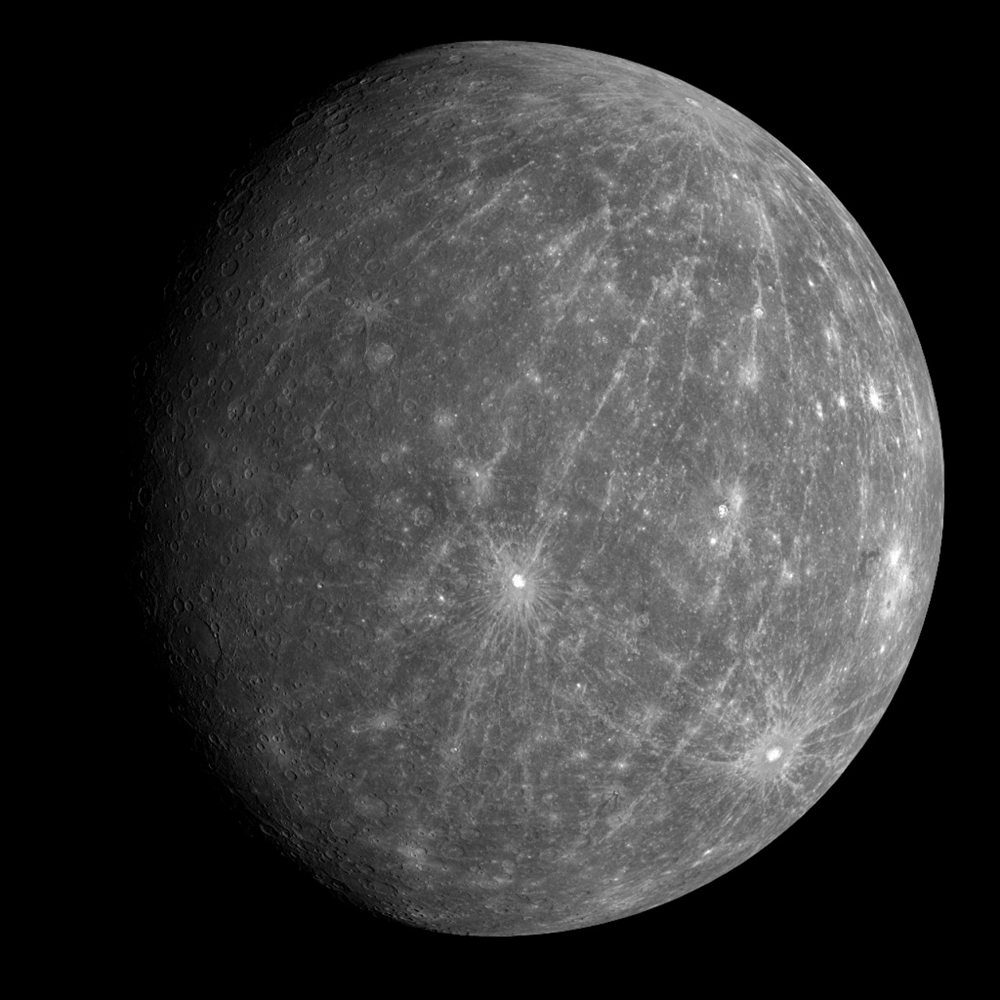

Mercury

The nearest planet to sun
Despite its short distance to the massive heat generator, its opposite side is incredibly cold just like space.
This is because Mercury does not have enough atmosphere to hold heat.
Back
Home
Next